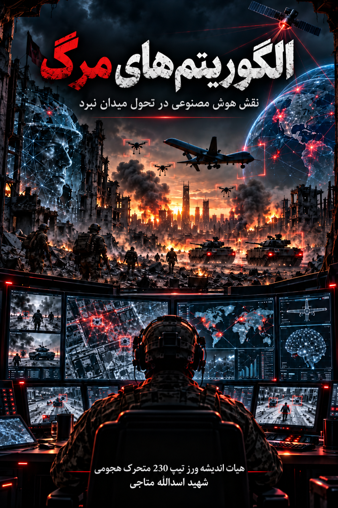

01
وقتی ماشینها یاد میگیرند
هوش مصنوعی، یادگیری ماشین، شبکههای عصبی، مدلهای زبانی، بینایی ماشین و محدودیتهای الگوریتمی.
نقش هوش مصنوعی در تحول میدان نبرد
از ماشینهایی که میبینند و تحلیل میکنند تا سامانههایی که میتوانند تصمیم بگیرند، هماهنگ شوند و در میدان نبرد عمل کنند؛ این کتاب مسیر ورود هوش مصنوعی به ادراک، فرماندهی، خودمختاری و جنگ دادهمحور را دنبال میکند.

ادراک ماشینی
خودمختاری
جنگ دادهمحور
هوش مصنوعی در میدان نبرد فقط به معنای «سلاح هوشمندتر» نیست. تحول مهمتر زمانی رخ میدهد که الگوریتمها میان حسگر، داده، تحلیل، تصمیم و سامانه اثرگذار قرار میگیرند و ریتم عملیات را تغییر میدهند.
این کتاب از مبانی فنی هوش مصنوعی آغاز میکند و گامبهگام به کاربردهای نظامی، ادراک ماشینی، خودمختاری، سامانههای گروهی و در نهایت معماری جنگ دادهمحور و چندحوزهای میرسد.
پرسش اصلی فقط این نیست که ماشین چه کاری میتواند انجام دهد؛ مسئله این است که ورود ماشین به ادراک و تصمیم، شیوه جنگیدن را چگونه تغییر میدهد.
از مبانی هوش مصنوعی تا شبکههای کشتار دادهمحور و عملیات چندحوزهای.
هوش مصنوعی، یادگیری ماشین، شبکههای عصبی، مدلهای زبانی، بینایی ماشین و محدودیتهای الگوریتمی.
ورود AI به سازمان نظامی، اطلاعات، ISR، آگاهی موقعیتی، برنامهریزی عملیات و پشتیبانی از تصمیم فرمانده.
حسگرها، بینایی ماشین، کشف هدف، ترکیب دادههای چندحسگری، فریب، استتار و میدان نبرد دادهمحور.
سامانههای بدون سرنشین و خودمختار، پهپادهای هوشمند، مهمات سرگردان، عاملهای رزمی و انسان در حلقه.
ازدحام، ادراک مشارکتی، تخصیص مأموریت، ناوبری جمعی، هماهنگی غیرمتمرکز و فرماندهی انسان–خودمختاری.
زنجیره حسگر تا تیرانداز، زمان تصمیم، فرماندهی و کنترل، عملیات چندحوزهای، جنگ الکترونیک و انطباق دشمن.
تمرکز کتاب بر رابطه میان فناوری، انسان، سازمان نظامی و محیط خصمانه است؛ نه فقط بر خودِ الگوریتم.
چگونه حسگرها میدان نبرد را به داده تبدیل میکنند و الگوریتم چگونه از داده، الگو استخراج میکند.
نقش AI در کاهش بار شناختی، اولویتبندی اطلاعات و فشردهسازی زمان تصمیم.
خودمختاری، کنترل انسانی، عاملهای هوشمند و اتصال تصمیم به سامانههای اثرگذار.
چرا فریب، جنگ الکترونیک، اختلال شبکه و انطباق دشمن میتوانند مزیت الگوریتمی را فرسوده کنند.
نسخه PDF در همین مخزن GitHub Pages قرار گرفته و بدون وابستگی به سرویس خارجی قابل مطالعه و دریافت است.
SYSTEM NOTE / 01
«آینده جنگ فقط درباره سلاحهای جدید نیست؛ درباره این است که چه کسی زودتر میبیند، بهتر میفهمد و سریعتر تصمیم را به اقدام تبدیل میکند.»